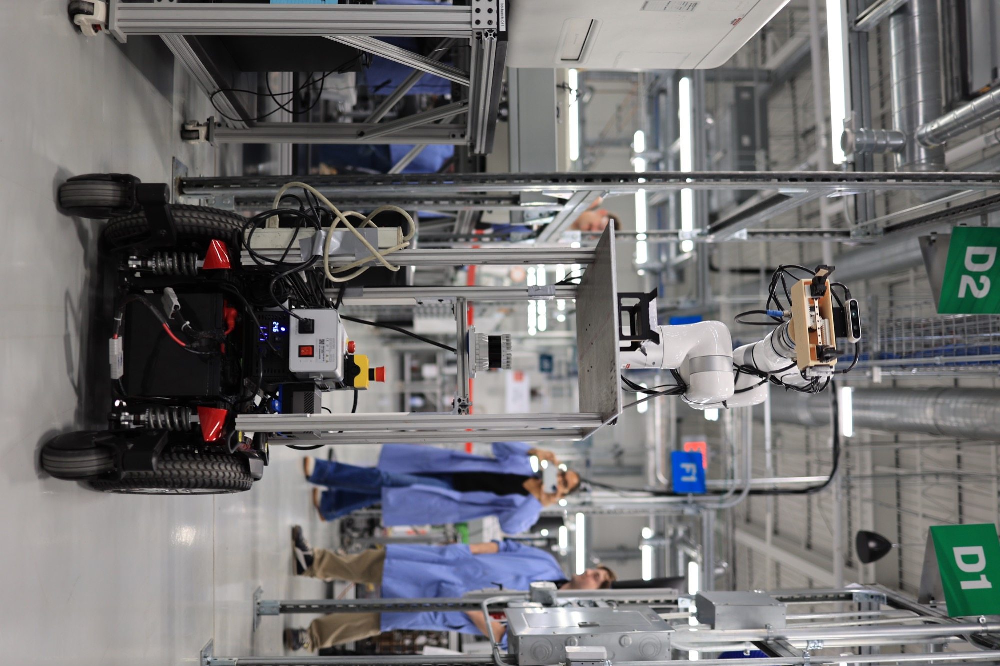
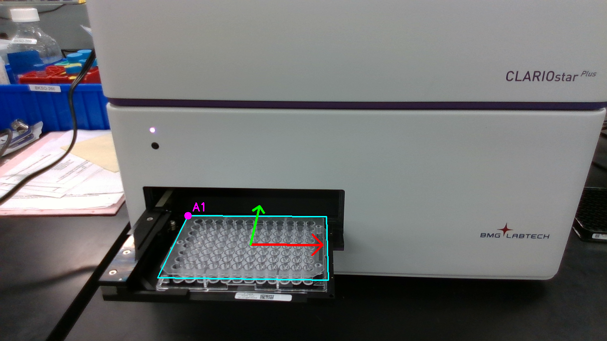
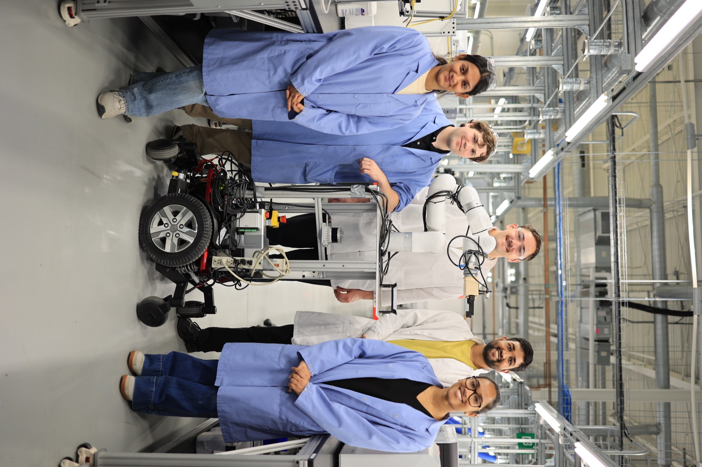
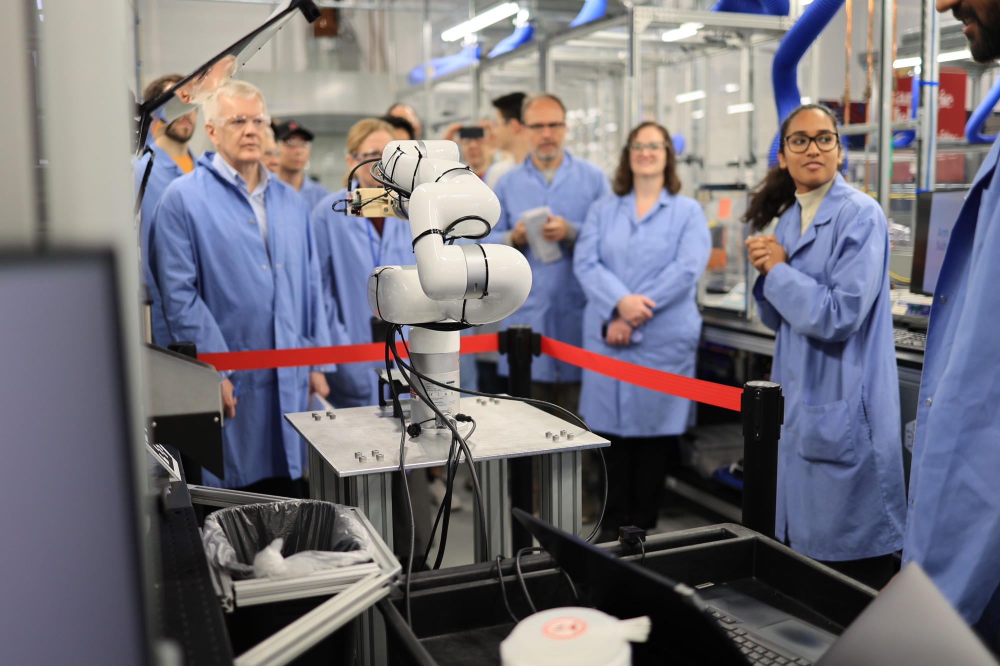

Catalyst: Mobile Manipulator for Lab Automation
Project Overview
Catalyst is an autonomous mobile manipulator designed to automate repetitive tasks in laboratory environments, specifically the high-precision handling of wellplates. The system integrates perception, navigation (Nav2 and FAST-LIO), motion planning (MoveIt2), and control into a single ROS 2 pipeline.
As Project Manager and a software lead, my work centers on the Perception-to-Manipulation pipeline, bridging the gap between raw sensor data and reliable robotic interaction.

Autonomous Place Demo
Catalyst placing a wellplate onto the Hamilton liquid-handler deck (sped up).
My Work
Spring 2026: Marker-Based Pipeline
Hand-in-Eye Calibration & TF Validation
To enable the robot to "see" its workspace, I implemented a Hand-in-Eye calibration routine that established the rigid transform between the camera and the robot’s end-effector.
- Used an Intel RealSense D435i mounted directly to the xArm6 end-effector.
- Solved the calibration using the AX = XB formulation, utilizing 27 unique AprilTag configurations to optimize the static transform.
- Validated the transform tree in RViz to ensure that AprilTag pose estimates remained consistent across the entire arm workspace.
Wellplate Grasp Pose Computation
Following calibration, I developed the logic to translate detected markers into actionable Tool Center Point (TCP) targets.
- TCP Definition: Calculated the precise geometric center of our custom 3D-printed gripper fingers relative to the final robot link.
- Frame Chaining: Built a pipeline to compute the wellplate center by measuring offsets from AprilTags mounted on the physical stand.
- Coordinate Alignment: Debugged rotational frame misalignments so the robot could grasp objects even when they were rotated relative to the table edge.
- Force-Torque Guidance: Used force-torque sensor feedback to guide the final approach and placement, making pick-and-place robust to small pose errors.
Fall 2026: Markerless 6D Pose Estimation
This semester, I am upgrading perception so the robot no longer depends on fiducial markers attached to lab objects.
- Text-Prompted Segmentation: Integrating SAM 3 to segment wellplates and lab objects from RGB-D frames using natural-language prompts.
- 6D Pose Estimation: Feeding those segmentation masks into FoundationPose to estimate full object poses directly, removing the need for AprilTags.
- Pipeline Integration: Connecting the markerless pose estimates to the existing grasp-pose and MoveIt2 pipeline so they work with the rest of the system.

Engineering Challenges
Error Propagation
Small rotational errors in the camera-to-EE transform amplify across the kinematic chain. I added temporal averaging of pose detections to filter out single-frame noise, and combined it with force-torque guided placement, which helped the system reach 80% end-to-end success.
Markerless Pose Robustness
Without fiducials, pose estimates must hold up on objects that are hard to perceive, such as transparent or symmetric wellplates, and under changing lab lighting. I am evaluating FoundationPose accuracy against our AprilTag baseline to make sure grasp precision stays the same.
The Team

